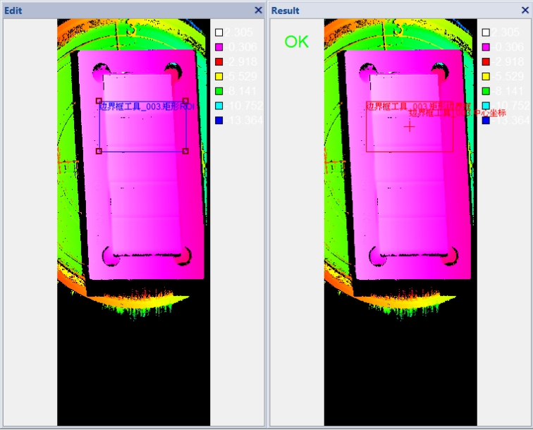
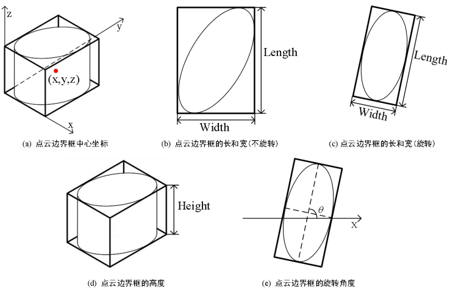

Lấy thông tin khung bao của ảnh độ sâu, hình 1 thể hiện hình ảnh hiệu quả của công cụ khung bao đám mây điểm.

| Phân loại | Tên tham số | Mô tả tham số |
|---|---|---|
| Cửa sổ thuộc tính | Phương thức tạo vùng quan tâm | Bao gồm ba chế độ: định vị, vùng quan tâm cố định, điểm tham chiếu, chế độ điểm tham chiếu sẽ thiết lập hệ tọa độ sản phẩm dựa trên điểm tham chiếu và đường thẳng tham chiếu trong chuỗi dữ liệu. |
| Độ lệch cố định X | Trong chế độ điểm tham chiếu, tọa độ X của vị trí tham chiếu vùng quan tâm trong hệ tọa độ sản phẩm đã thiết lập, đơn vị: mm. | |
| Độ lệch cố định Y | Trong chế độ điểm tham chiếu, tọa độ Y của vị trí tham chiếu vùng quan tâm trong hệ tọa độ sản phẩm đã thiết lập, đơn vị: mm. | |
| Loại vùng quan tâm | Chia thành 3 loại, toàn bộ ảnh, vùng quan tâm hình chữ nhật và vùng quan tâm hình chữ nhật biến đổi afin. | |
| Có xoay hay không | Chia thành 2 loại, xoay và không xoay. Khi xoay, phát hiện hình chữ nhật ngoại tiếp nhỏ nhất theo trục chính, khi không xoay, phát hiện hình chữ nhật ngoại tiếp nhỏ nhất theo tọa độ. | |
| Bật bộ lọc theo hướng Z | Chọn “Có”, thì bật chức năng lọc theo hướng Z, có thể thiết lập phạm vi ngưỡng, giới hạn dưới ngưỡng, giới hạn trên ngưỡng. | |
| Phạm vi ngưỡng | Chọn “Trong phạm vi ngưỡng”, thì chọn các điểm trong phạm vi ngưỡng; chọn “Ngoài phạm vi ngưỡng”, thì loại trừ các điểm trong phạm vi ngưỡng, chọn các điểm ngoài phạm vi; chọn “Toàn bộ”, thì bỏ qua phạm vi ngưỡng, chọn toàn bộ điểm. | |
| Giới hạn dưới ngưỡng | Giới hạn dưới của phạm vi ngưỡng, phạm vi giá trị là [-100, 100], và nhỏ hơn hoặc bằng ngưỡng cứng 2, đơn vị mm. | |
| Giới hạn trên ngưỡng | Giới hạn trên của phạm vi ngưỡng, phạm vi giá trị là [-100, 100], và lớn hơn hoặc bằng ngưỡng cứng 1, đơn vị mm. | |
| Giới hạn trên chiều rộng | Phạm vi giá trị là [0, 100000], và giới hạn dưới phải nhỏ hơn hoặc bằng giới hạn trên. | |
| Giới hạn dưới chiều rộng | Phạm vi giá trị là [0, 100000], và giới hạn dưới phải nhỏ hơn hoặc bằng giới hạn trên. | |
| Giới hạn trên chiều dài | Phạm vi giá trị là [0, 100000], và giới hạn dưới phải nhỏ hơn hoặc bằng giới hạn trên. | |
| Giới hạn dưới chiều dài | Phạm vi giá trị là [0, 100000], và giới hạn dưới phải nhỏ hơn hoặc bằng giới hạn trên. | |
| Giới hạn trên chiều cao | Phạm vi giá trị là [0, 100000], và giới hạn dưới phải nhỏ hơn hoặc bằng giới hạn trên. | |
| Giới hạn dưới chiều cao | Phạm vi giá trị là [0, 100000], và giới hạn dưới phải nhỏ hơn hoặc bằng giới hạn trên. | |
| Giới hạn trên góc xoay | Phạm vi giá trị là [-90, 90], và giới hạn dưới phải nhỏ hơn hoặc bằng giới hạn trên. | |
| Giới hạn dưới góc xoay | Phạm vi giá trị là [-90, 90], và giới hạn dưới phải nhỏ hơn hoặc bằng giới hạn trên. | |
| Cửa sổ ảnh | Ảnh độ sâu | Hiển thị ảnh độ sâu cần phát hiện, hiển thị dưới dạng ảnh giả màu. |
| Vùng phát hiện | Hiển thị vùng cần phát hiện trên ảnh. | |
| Chuỗi dữ liệu | Ảnh độ sâu đầu vào | Nhập ảnh độ sâu cần phát hiện. |
| Biến đổi tuyến tính hai chiều | Biến đổi tịnh tiến, xoay, thu phóng của mục tiêu so với mẫu. | |
| Điểm tham chiếu | Lấy điểm này làm gốc tọa độ để thiết lập hệ tọa độ sản phẩm. | |
| Đường thẳng tham chiếu | Khi góc của đường thẳng có xu hướng nằm ngang, thì đường thẳng này được dùng làm trục X, nếu không thì dùng làm trục Y. | |
| Đương lượng điểm ảnh | Khi thiết lập hệ tọa độ sản phẩm, tức là độ lệch cố định X và độ lệch cố định Y trong thuộc tính sẽ được dùng để suy ngược khoảng cách ảnh, đơn vị: mm/điểm ảnh. | |
| Giao diện nâng cao | Không | Không |
| Phân loại | Tên tham số | Mô tả tham số |
|---|---|---|
| Cửa sổ giám sát | Ảnh độ sâu đầu ra | Chiều dài, chiều rộng và kích thước điểm ảnh của ảnh đầu vào, cũng như các tham số dữ liệu độ sâu. |
| Tọa độ tâm X | Tọa độ X của tâm khung bao trong kết quả phát hiện. | |
| Tọa độ tâm Y | Tọa độ Y của tâm khung bao trong kết quả phát hiện. | |
| Tọa độ tâm Z | Tọa độ Z của tâm khung bao trong kết quả phát hiện. | |
| Chiều rộng | Chiều rộng của khung bao trong kết quả phát hiện. | |
| Chiều dài | Chiều dài của khung bao trong kết quả phát hiện. | |
| Chiều cao | Chiều cao của khung bao trong kết quả phát hiện. | |
| Góc xoay | Góc xoay của khung bao trong kết quả phát hiện. | |
| Kết quả thực thi | Kết quả thực thi của công cụ. | |
| Thời gian thực thi | Thời gian thực thi của công cụ. | |
| Cửa sổ ảnh | Ảnh độ sâu đầu vào | Hiển thị ảnh độ sâu đã phát hiện, hiển thị dưới dạng ảnh giả màu. |
| Khung bao | Hiển thị khung bao trong kết quả phát hiện, bao gồm khung bao và tâm của nó. | |
| Chuỗi dữ liệu | Giống các tham số trong cửa sổ giám sát, dùng cho các công cụ tiếp theo. |
Bước 1 Thiết lập vùng phát hiện và loại xoay
Để lấy thông tin khung bao của dữ liệu độ sâu, cần thiết lập vùng phát hiện và loại xoay của khung bao. Trong đó, vùng phát hiện có 3 loại: toàn bộ ảnh, hình chữ nhật, hình chữ nhật biến đổi afin, còn loại xoay có 2 loại: xoay và không xoay.
Bước 2 Thực hiện đo và xuất kết quả
Sau khi hoàn tất thiết lập vùng phát hiện, loại xoay của khung bao, có thể thực hiện đo. Kết quả đầu ra bao gồm: tọa độ tâm của khung bao, thông tin chiều dài cạnh của khung bao và góc xoay của khung bao. Thông tin liên quan của khung bao như thể hiện trong Hình 2.

Trong đó,
Tọa độ tâm：Tọa độ điểm tâm (x, y, z) của khung bao dữ liệu độ sâu trong vùng phát hiện, như thể hiện trong Hình 2(a).
Chiều rộng：Chiều rộng của khung bao dữ liệu độ sâu trong vùng phát hiện. Như thể hiện trong Hình 2(b), khi không bật chức năng xoay, khung bao là hình chữ nhật nhỏ nhất có các cạnh song song với trục X và trục Y, chiều rộng là kích thước theo hướng trục X. Như thể hiện trong Hình 2©, khi bật chức năng xoay, chiều rộng là kích thước cạnh nhỏ hơn của khung bao sau khi xoay.
Chiều dài：Chiều dài của khung bao dữ liệu độ sâu trong vùng phát hiện. Như thể hiện trong Hình 2(b), khi không bật chức năng xoay, khung bao là hình chữ nhật nhỏ nhất có các cạnh song song với trục X và trục Y, chiều dài là kích thước theo hướng trục Y. Như thể hiện trong Hình 2©, khi bật chức năng xoay, chiều dài là kích thước cạnh lớn hơn của khung bao sau khi xoay.
Chiều cao：Chiều cao của khung bao dữ liệu độ sâu trong vùng phát hiện, như thể hiện trong Hình 2(d)。。
Góc xoay：Khi không bật chức năng xoay, góc xoay luôn là 90°；khi bật chức năng xoay, như thể hiện trong Hình 2(e), góc xoay là góc θ giữa cạnh dài của khung bao và trục X.
Khi “Bật bộ lọc theo hướng Z” là “Có”, ảnh đầu ra là ảnh sau khi phân đoạn theo hướng Z, nếu không thì là ảnh đầu vào.
参见“\Samples\3D\深度图\3D测量工具.gvp”。